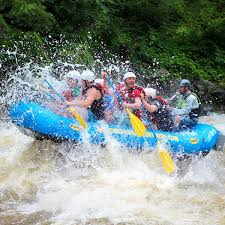

White Water Rafting
Whitewater rafting is a thrilling outdoor activity that combines excitement with beautiful scenery. Water rafting is not just about thrill-seeking; it involves teamwork, communication, and a respect for nature's power. By mastering paddling techniques, understanding commands, prioritizing safety, and reading water dynamics, adventurers can enhance their rafting experience while ensuring a fun and safe journey on the river.
